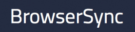
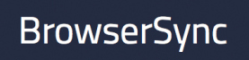

Web Project Workflows
with Gulp, Git, and BrowserSync

 

You can put speaker notes here if you want to share them with people after. I like to do that since it's often hard to understand slides without knowing what people said.
Thats it, folks
Let me know if you do something nifty with them. Thanks!